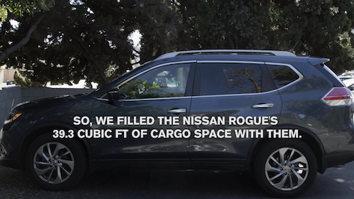
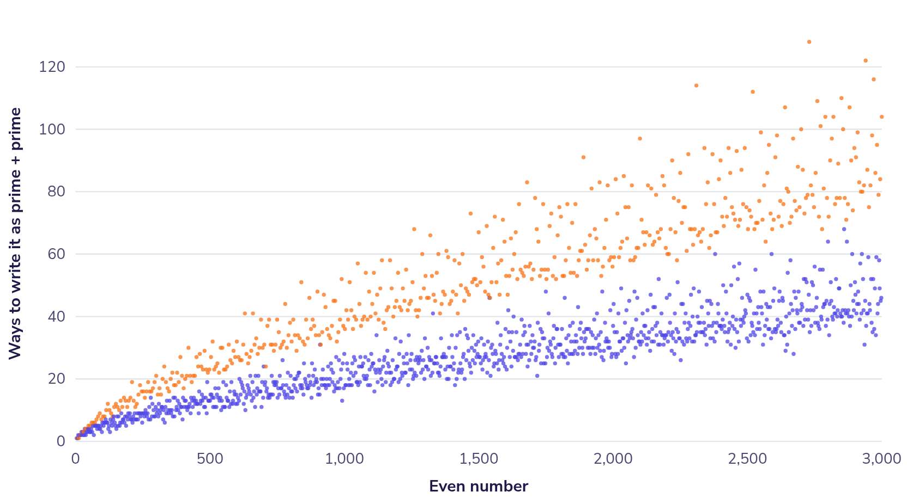
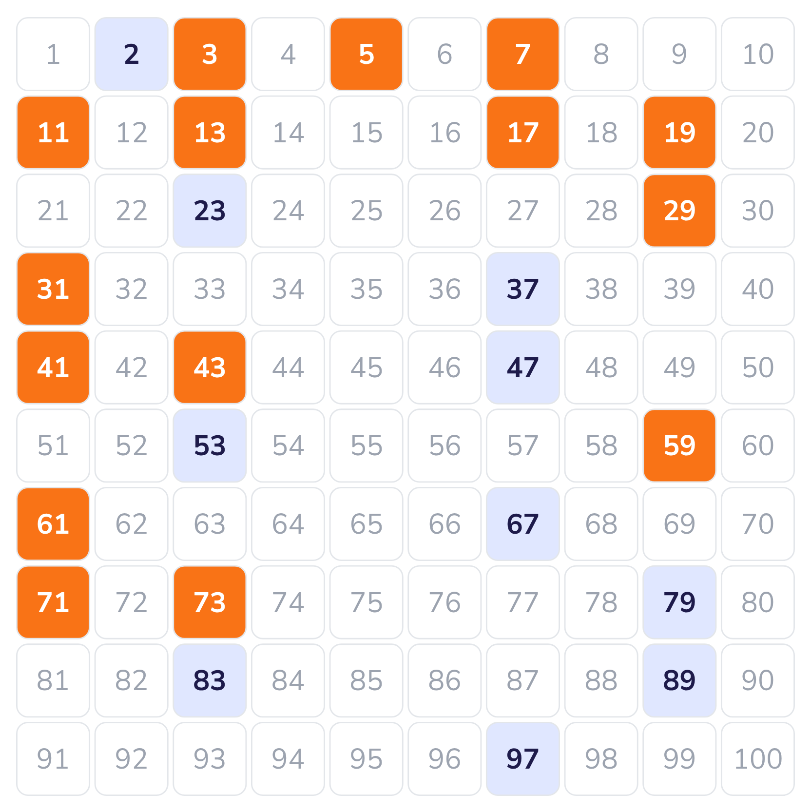
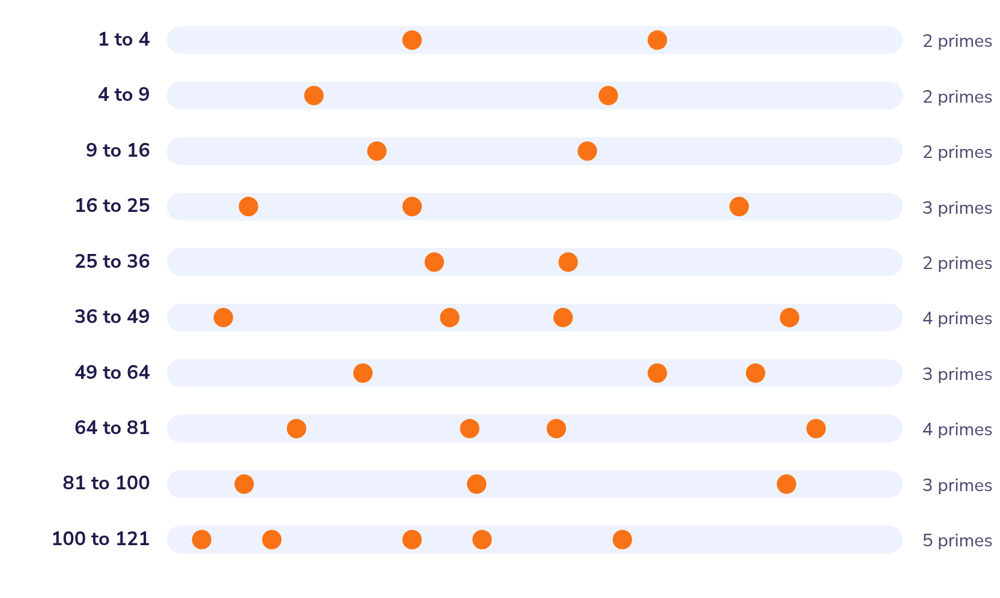
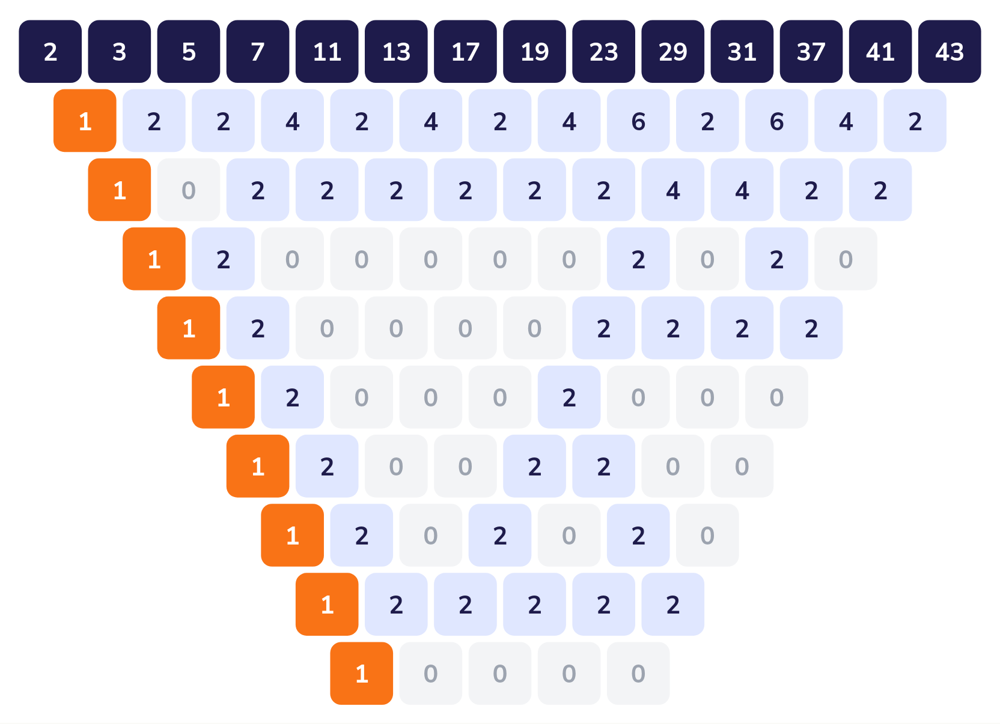
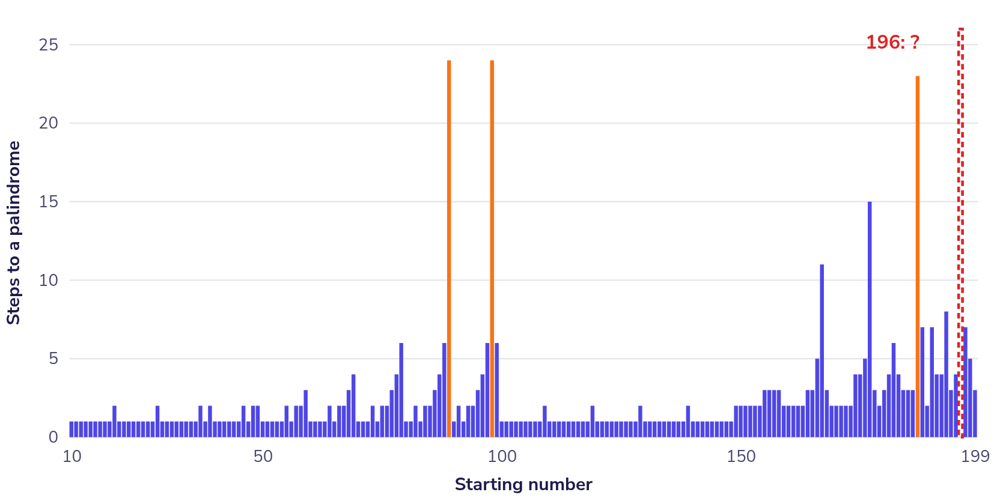
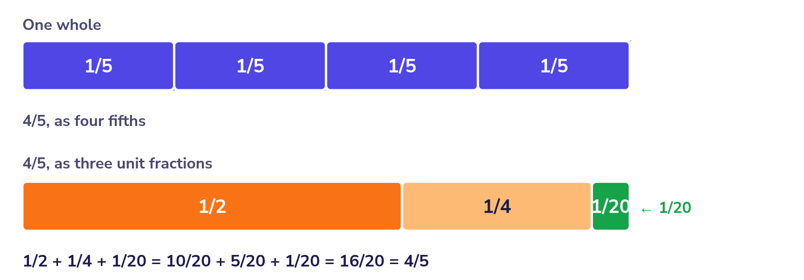
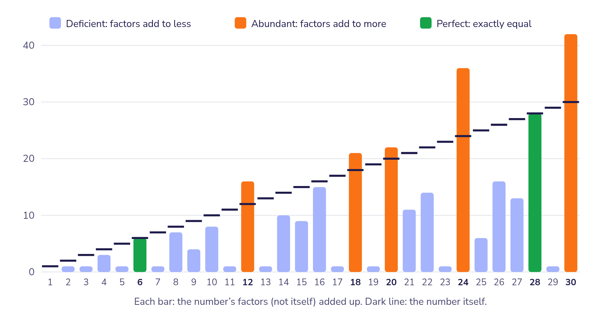
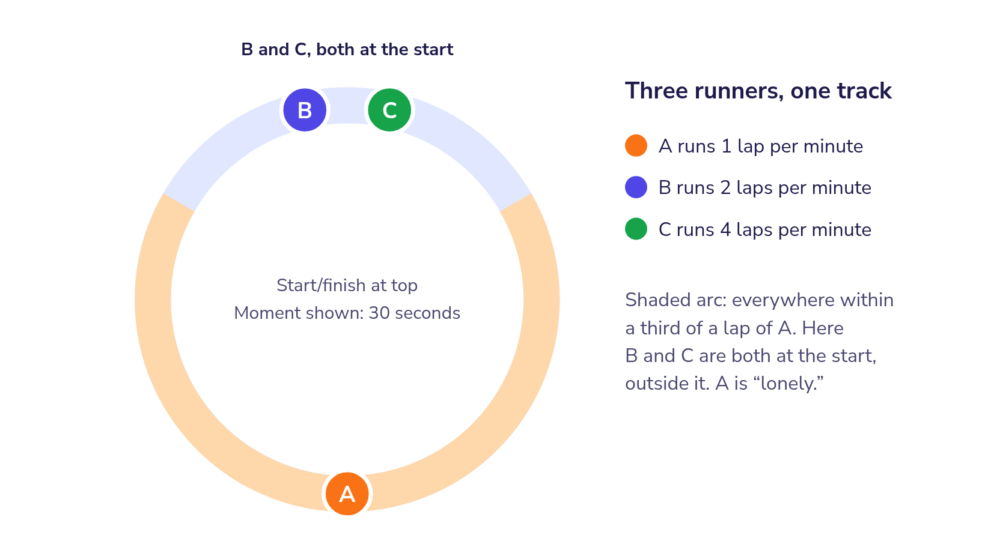

TCE 412M · Middle Grades Mathematics
Two ways to get every student doing mathematics
Todd Edwards · Tuesday, 29 September 2026 · 316 McGuffey
10:05
As learners, not teachers
10:30
Name the moves that made them work
10:40
An unsolved problem, in Orbit Explorer
11:05
What would you do with seventh graders?
Routine 1 · Three-act task · Act 1
A number you know is too small
A number you know is too big
…and the reason why
Play the 20-second video: vimeo.com/157324585 · Dan Meyer, CC-BY, from a Nissan ad
Act 2
Cargo space
39.3 cubic feet
One box of cookies
7 × 2.3 × 4.6 inches

Measurements from Nissan and Dan Meyer's task notes
Act 3 · The reveal
Compare the real count to your math. Why might they differ?
Nissan's reveal video: facebook.com/nissanusa/videos/10156496173410375
Routine 2
Every one of them can be the answer. Find a reason for each.
A
9
B
16
C
25
D
43
More sets at talkingmathwithkids.com/wodb · Christopher Danielson
Routine 3 · Would You Rather?
Option A
Option B
Commit to a side before you calculate. Then justify it with mathematics.
wouldyourathermath.com · John Stevens, after Robert Kaplinsky
Switch hats
What are some teacher moves that you observed me doing during the routines?
Were there any moves that seemed odd to you, or that you have questions about?
Which of those moves would be hardest to pull off with a room of seventh graders, and why?
When a routine opens a lesson
After the warm-up, could a student still show you something of their own on the task?
One more tool
1
Prompt packs → van Hiele Geometry → Use
2
Choose “The whole room”: nothing is kept
3
What do you see? How do you know?
You can also build your own packs, with your own shapes, dot patterns, and ten-frames. We won't today, but check it out and see what it can do.
ohiomathteacher.github.io/applet-library/nvoke · free, in any browser, nothing uploaded
The answer already exists, in the teacher's key.
You check your work by comparing it to the answer.
A wrong answer is a mistake.
Nobody knows the answer. Not your teacher, not the internet, not AI.
You gather evidence, make claims, and hunt for counterexamples.
A counterexample is progress.
Are you suggesting that middle grades students engage in math research, in addition to (or in lieu of) school math?
Why yes, I am!
Why would I do that?
An unsolved problem
What happened to your number?
If n is even
n ÷ 2
If n is odd
3n − 1
Pick a number from 21 to 50. Predict, then run it.
Where did everyone end up? How many different loops?
Move b to +1 and set max steps to 200. Now try 27.
“I conjecture that…” and one “I wonder…”
ohiomathteacher.github.io/orbit-explorer · pairs, about 25 minutes
The reveal
Does every starting number end at 1? Nobody knows. It has been open since 1937.
And your 3n − 1 question, whether every number lands in one of the loops you found, is unsolved too.
Now put your teacher hat on
What did the tool let you notice that pencil and paper couldn't? What did the pencil give you that the tool didn't?
Where would you pause a class of seventh graders, and what would you ask?
Which routine could open this lesson without giving it away?
Each one: easy to state, easy to try by hand, and nobody knows the answer.
Handout and all eight pages: ohiomathteacher.github.io/applet-library/open-problems
Thank you! · mtoddedwards@proton.me
For your classroom
Each has its own page online, with a picture and a detailed one-pager to print.
ohiomathteacher.github.io/applet-library/open-problems · Handout (PDF)
Primes · Grades 6–8
Every even number bigger than 2 can be made by adding two primes.
Ask your students
Which even numbers can be made the most ways?

Primes · Grades 6–8
Primes that are just 2 apart, like 11 and 13, keep showing up forever.
Ask your students
Look at the number between each twin pair: 4, 6, 12, 18, 30… What do you notice?

Primes and squares · Grades 7–9
Between any two perfect squares that sit next to each other, there's always a prime.
Ask your students
Which strip has the fewest primes? Could one ever have none?

Primes and subtraction · Grades 5–8
List the primes. Subtract neighbors to make a new row. Keep going. Every new row starts with 1.
Ask your students
Start with a different list, like 1, 2, 4, 8, 16. Does it still work?

Addition · Grades 4–7
Reverse a number and add. Repeat until it reads the same both ways. Does 196 ever get there?
Ask your students
89 and 98 take the same number of steps. Why?

Fractions · Grades 5–8
Any fraction with 4 on top can be split into three fractions with 1 on top.
Ask your students
Try 4/9. What's your first move?

Factors · Grades 5–8
A number is perfect when its factors add up to it, like 6 = 1 + 2 + 3. Is any perfect number odd?
Ask your students
Can an odd number's factors ever add to more than it? Try 945.

Rates and motion · Grades 7–10
Runners start together on a round track, at different speeds. Will each one, at some moment, be far from everyone else?
Ask your students
Act it out with three speeds. Freeze! Who's lonely?
